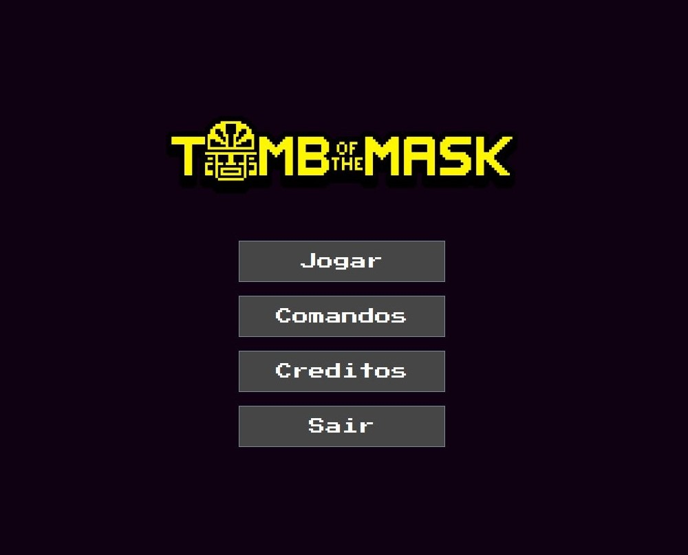
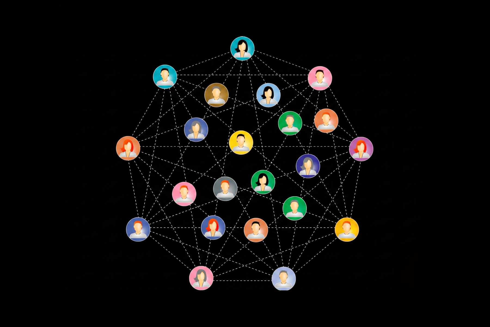

Olá, eu sou o Pedro Dorigatti
Estudante de Engenharia de Computação unindo desenvolvimento de software, sistemas embarcados e IoT para criar soluções eficientes.
USP
São Carlos
C, Java
& Python
Sobre Mim
Engenharia de Computação
Sou graduando em Engenharia de Computação pela Universidade de São Paulo (USP) em São Carlos. Sou apaixonado por resolver problemas complexos através de código, transitando desde a programação de baixo nível e hardware até o desenvolvimento web.
Atualmente, me dedico à Iniciação Científica explorando Redes de Sensores Sem Fio (WSN) e protocolos de comunicação para a agricultura de precisão.
Nome
Pedro Dorigatti
Localização
São Carlos, SP
Idade
20 Anos
Email
dorigattipaf@usp.br
Ocupação
Estudante
Hard Skills (Base)
C, Java e Python.
AvançadoDesenvolvimento Web
HTML, CSS, Typescript
IntermediárioResolução de Problemas
Habilidade desenvolvida através de projetos de Estrutura de Dados e algoritmos complexos, buscando sempre a otimização de código.
Pesquisa & Autonomia
Facilidade em aprender novas tecnologias e buscar soluções de forma independente, impulsionada pela experiência na Iniciação Científica.
Resume
Formação Acadêmica
Minha base de conhecimento e ambiente de desenvolvimento
USP - São Carlos
Em andamentoBacharelado em Engenharia de Computação
Foco profundo em hardware, software, algoritmos e matemática aplicada. Desenvolvimento de múltiplos projetos práticos.
Experiência Acadêmica
Aplicação prática do conhecimento universitário em pesquisa estruturada.
Iniciação Científica
PresentePesquisador (Redes de Sensores Sem Fio)
Projeto focado no uso de tecnologias e protocolos de comunicação para aplicação em agricultura de precisão. Envolve o desenvolvimento de firmware, modelagem de dados e integração de APIs para coleta e transmissão eficiente de informações no campo.
Portfolio
- All Work
- POO
- Grafos

Programação Orientada a Objetos
Jogo (Tomb of the Mask)
Desenvolvimento de um jogo completo aplicando conceitos avançados de POO (herança, polimorfismo, encapsulamento e design patterns). Foco em arquitetura de código limpa e modular.
Tecnologias: Java

Estrutura de Dados
Busca em Redes Sociais com Grafos
Programa em C construído para a disciplina de Estruturas de Dados 3. Implementação de algoritmos de busca (BFS/DFS) e menor caminho para simular conexões e recomendações em uma rede social modelada através de grafos.
Tecnologias: C